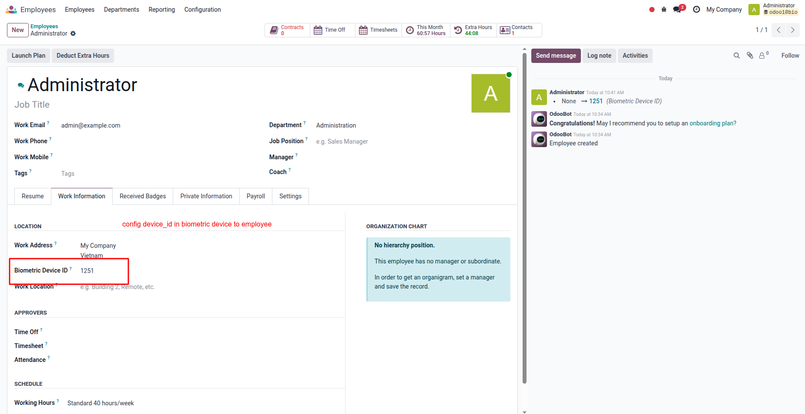
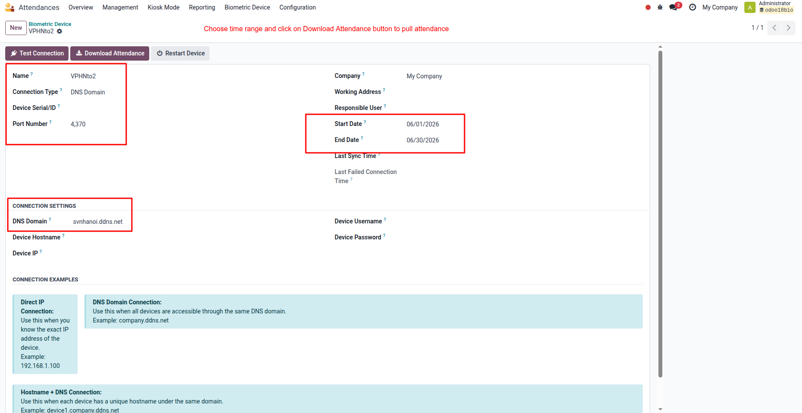
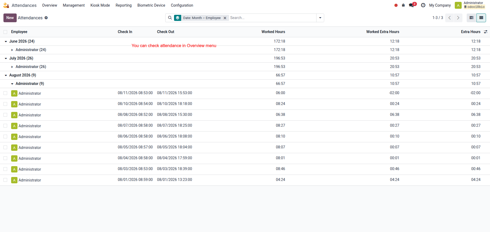
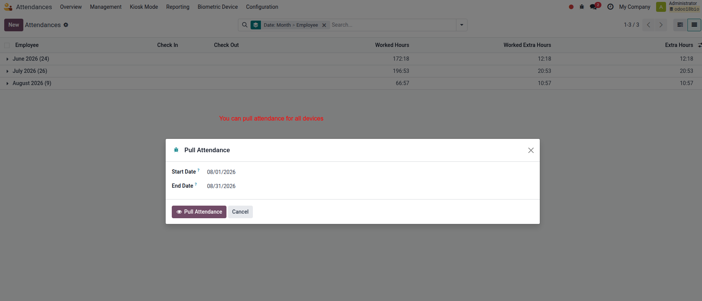
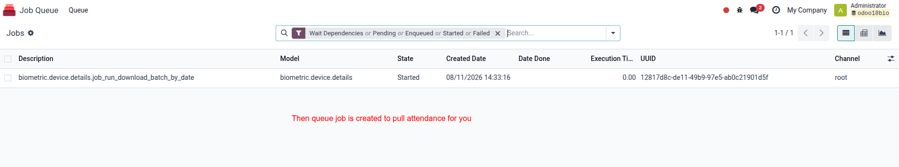

See how our module seamlessly handles biometric attendance logs at enterprise scale with zero timeout.
Supports a wide range of popular biometric devices using standard network protocols, including ZKTeco, Ronald Jack, and similar mainstream hardware.
Engineered for enterprise scale. Automatically breaks down enormous data pull requests into small, optimized batches using Queue Jobs to completely eliminate system timeout errors on multiple devices.
Runs silently in the background via Odoo Cron scheduled every 60 minutes. It automatically targets and refreshes data logs from the previous day to maintain absolute data accuracy.
Includes a robust dynamic wizard allowing HR managers to explicitly pick any custom Start Date and End Date range to recalculate or pull missing logs manually.
Cron (Hourly for yesterday's logs) or Manual Date Wizard executes.
System chunks devices into multi-channel concurrent queue jobs.
Raw data maps perfectly into Odoo Attendance logs with Auditing.
Easily configure the unique Biometric ID assigned from the physical machine directly inside the employee's HR profile (hr.employee).

Manage multiple attendance devices, monitor connection configurations, and trigger direct data pulls for selected time ranges.

Track full transparency of background syncing. Monitor total pulled records, successful additions, and immediately catch failed records.

Need to re-sync missing historical logs? Use the dynamic wizard to define custom Start and End Dates to seamlessly pull device logs.

When triggering historical data pulls, Odoo pushes separate jobs into the Queue Job framework, enabling asynchronous multi-worker processing without blocking your main UI thread.

Developed for Odoo Enterprise & Community Environments. Optimized for multi-worker environments.